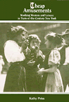
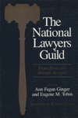
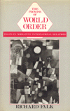

|
| Academic
Writing as Social Practice
Brodkey,
Linda
How articulating the reality of a material world in words is
the provenance of the academic community
220 pp • Fall 1987
cloth 0-87722-495-1
EAN 978-0-87722-495-2
|
| 
| The
Afrocentric Idea
Asante,
Molefi Kete
Asante's spirited engagement with culture warriors, neocons,
and postmodernists updates this classic
256 pp • Fall 1987
cloth 0-87722-483-8
EAN 978-0-87722-483-9
|
|
| The
Alternative Press Annual, 1986
Case,
Patricia J., ed.
The fourth volume of the best and most provocative articles from
alternative press magazines and newspapers
368 pp • Fall 1987
cloth 0-87722-512-5
EAN 978-0-87722-512-6
|
| 
|
Art
for The Masses
A Racical Magazine and Its Graphics, 1911-1917
Zurier,
Rebecca, and Leslie Fishbein
The first study of the art in The Masses and the changing
role that pictures played in the magazine’s political message
240 pp • 9.25x12 • Fall 1987
cloth 0-87722-513-3
EAN 978-0-87722-513-3
|
|
|
Beyond
the Market and the State
New Directions in Community Development
Bruyn,
Severyn T., and James Meehan, eds.
Essays propose a social design for going beyond market competition
and government regulation as the basis for developing a stable
economic base to the community
272 pp • Fall 1987
cloth 0-87722-484-6
EAN 978-0-87722-484-6
|
| 
|
Cheap
Amusements
Working Women and Leisure in Turn-of-the-Century New York
Peiss,
Kathy
The dilemmas of work and leisure for women at the turn-of-the-century
New in Paperback
288 pp • 5.5x8.25 • Fall 1985
paper 0-87722-500-1
EAN 978-0-87722-500-3
|
| 
|
Chicago
Race, Class, and the Response to Urban Decline
Squires,
Gregory D., Larry Bennett, Kathleen McCourt, and Philip Nyden
The social, economic, and political costs of the growth ideology
for the Windy City
248 pp • Fall 1987
cloth 0-87722-487-0
EAN 978-0-87722-487-7
|
|
|
Children
in the Field
Anthropological Experiences
Cassell,
Joan, ed.
Funny, sad, horrifying, and fascinating narratives by anthropologists
who brought children with them into the field
288 pp • Fall 1987
cloth 0-87722-477-3
EAN 978-0-87722-477-8
|
|
|
The
Crisis of American Labor
Operation Dixie and the Defeat of the CIO
Griffith,
Barbara S.
The dramatic account of the failure of Operation Dixie, the attempt
by the CIO to unionize the postwar South
240 pp • Fall 1987
cloth 0-87722-503-6
EAN 978-0-87722-503-4
|
| 
|
The
Cult of the Court
Brigham,
John
A fresh and innovative examination of the U.S. Supreme Court
as the final arbiter of constitutional interpretation
280 pp • Fall 1987
cloth 0-87722-486-2
EAN 978-0-87722-486-0
|
| |
The
Cultural Meaning of the Scientific Revolution
Jacob,
Margaret C.
Examines the historical process of how scientific knowledge became
and inherent part of Western culture
288 pp • Fall 1987
cloth 0-87722-536-2
EAN 978-0-87722-536-2
|
|
|
Detroit
Race and Uneven Development
Darden,
Joe T., Richard Child Hill, June Thomas, and Richard Thomas
Examining the genesis of modern Detroit as a hub of wealth and
poverty
336 pp • Fall 1987
cloth 0-87722-485-4
EAN 978-0-87722-485-3
|
| 
|
Environmental
Ethics
Duties to and Values in the Natural World
Rolston,
III, Holmes
An exploration of the philosophical nature of ecology
408 pp • Fall 1987
cloth 0-87722-501-X
EAN 978-0-87722-501-0
|
|
|
History
and Subjectivity
The Transformation of Marxist Theory
Gottlieb,
Roger S.
An original social theory synthesizing conflicting perspectives
of Marxism
336 pp • Fall 1987
cloth 0-87722-494-3
EAN 978-0-87722-494-5
|
| 
|
Inhuman
Relations
Quality Circles and Anti-Unionism in American Industry
Grenier,
Guillermo J.
A vivid exposé of the use of Quality Circles at Johnson
& Johnson's
256 pp • Fall 1987
cloth 0-87722-502-8
EAN 978-0-87722-502-7
|
|
|
Knowledge,
Fiction, and Imagination
Novitz,
David
A highly original case that fiction is a reliable source of knowledge
about the world
280 pp • Fall 1987
cloth 0-87722-480-3
EAN 978-0-87722-480-8
|
| 
|
Middle
Class Radicalism in Santa Monica
Kann,
Mark E.
What happens when affluent middle class citizens give an electoral
mandate to leftist radicals?
New in Paperback!
336 pp • Spring 1986
paper 0-87722-526-5
EAN 978-0-87722-526-3
|
| |
The
Miller Heresy, Millennialism, and American Culture
Doan, Ruth Alden
Analyzes the interaction between the Millerites' Second Advent
Movement and the broader culture
296 pp • Fall 1987
cloth 0-87722-481-1
EAN 978-0-87722-481-5
|
| |
Moral Education
Character, Community, and Ideals
Sichel,
Betty A.
A far-ranging examination of how ethical principles are transmitted
in the twentieth century
256 pp • Fall 1987
cloth 0-87722-508-7
EAN 978-0-87722-508-9
|
| 
|
Morals,
Reason, and Animals
Sapontzis,
S. F.
Criticizes the common belief that we are entitled to exploit
animals for our benefit because they are not as rational as people
328 pp • Fall 1987
cloth 0-87722-493-5
EAN 978-0-87722-493-8
|
|
|
More
Speech
Dialogue Rights and Modern Liberty
Chevigny,
Paul
A ground-breaking argument for free speech and related procedural
rights
228 pp • Fall 1987
cloth 0-87722-514-1
EAN 978-0-87722-514-0
|
| 
|
Music,
Talent, and Performance
A Conseratory Cultural System
Kingsbury,
Henry
An anthropologist's unusual ethnography of an American conservatory
228 pp • 5.5x8.25 • Fall 1987
cloth 0-87722-516-8
EAN 978-0-87722-516-4
|
|
|
My
Diary North and South
William Howard Russell
Berwanger, Eugene H., ed.
New edition of selections of William Howard Russell's 1863 journal
384 pp • Fall 1987
cloth 0-87722-522-2
EAN 978-0-87722-522-5
|
| 
|
National
Lawyers Guild
From Roosevelt through Reagan
Ginger,
Ann Fagan, and Eugene M. Tobin, eds.
A documentary history traces the growth of one of the few progressive
organizations created-in the 1930s to survive the Cold War and
McCarthyism
344 pp • Fall 1987
cloth 0-87722-488-9
EAN 978-0-87722-488-4
|
| 
|
Never
Married Women
Simon,
Barbara Levy
A spirit of independence pervades these compelling self-portraits
as the women describe their decisions
228 pp • Fall 1987
cloth 0-87722-497-8
EAN 978-0-87722-497-6
|
| 
|
Nietzsche's
Zarathustra
Higgins,
Kathleen Marie
Provides interpretive guidelines for making sense of Thus
Spoke Zarathustra
328 pp • Fall 1987
cloth 0-87722-482-X
EAN 978-0-87722-482-2
|
|
|
Paths
into American Culture
Burnham,
John C.
Classic essays that have greatly influenced the cultural interpretation
of American society
Fall 1987
cloth 0-87722-505-2
EAN 978-0-87722-505-8
|
| 
|
Philadelphia's
Black Elite
Activism, Accommodation, and the Struggle for Autonomy, 1787-1848
Winch,
Julie
A study of Philadelphia's black leaders before the Civil War
256 pp • Fall 1987
cloth 0-87722-515-X
EAN 978-0-87722-515-7
|
| 
|
The
Promise of World Order
Essays in Normative International Relations
Falk,
Richard
A penetrating analysis of militarism and international relationships
336 pp • Fall 1987
cloth 0-87722-517-6
EAN 978-0-87722-517-1
|
|
|
Reducing
Workweeks to Prevent Layoffs
The Economic and Social Impacts of Unemployment Insurance-Supported
Work Sharing
Best,
Fred, and Herbert J. Gans
Economic and human impact of reduced workweeks on employers,
employees, governments, and the economy
228 pp • Fall 1987
cloth 0-87722-506-0
EAN 978-0-87722-506-5
|
|
|
Rethinking
Rental Housing
Gilderbloom,
John I., Richard P. Appelbaum, and Joe R. Feagin
Challenges conventional assumptions concerning the operation
of housing markets
296 pp • Fall 1987
cloth 0-87722-498-6
EAN 978-0-87722-498-3
|
|
|
Revising
State Theory
Essays in Politics and Postindustrialism
Block,
Fred
An analysis of the relationship between business and the state
256 pp • Fall 1987
cloth 0-87722-465-X
EAN 978-0-87722-465-5
|
|
|
Selma's
Peacemaker
Ralph Smeltzer and Civil Rights Mediation
Longenecker,
Steve L.
A fresh perspective on the dramatic events of Selma
288 pp • Fall 1987
cloth 0-87722-489-7
EAN 978-0-87722-489-1
|
| 
|
Spontaneous
Shelter
International Perspectives and Prospects
Patton,
Carl V., ed.
Focuses on the problem of providing shelter in underdeveloped
countries
256 pp • Fall 1987
cloth 0-87722-507-9
EAN 978-0-87722-507-2
|

|
Street
Woman
Miller,
Eleanor M.
Interviews with female street hustlers working in prostitution,
fraud, forgery, embezzlement, and larceny
New in Paperback!
216 pp • Fall 1986
paper 0-87722-509-5
EAN 978-0-87722-509-6
|
|
|
Washington,
D.C.
Inner-City Revitalization and Minority Suburbanization
Gale,
Dennis E.
Using public education as a gauge to measure racial and ethnic
change in urban areas
259 pp • Fall 1987
cloth 0-87722-496-X
EAN 978-0-87722-496-9
|
|
|
Women
and the Politics of Empowerment
Bookman,
Ann, and Sandra Morgan, eds.
Case studies of community and workplace organizing that redefine
our notions of "the political"
352 pp • Fall 1987
cloth 0-87722-504-4
EAN 978-0-87722-504-1
|
| 
|
Women
with Disabilities
Essays in Psychology, Culture, and Politics
Fine,
Michelle, and Adrienne Asch, eds.
The integration of gender studies with disability scholarship
347 pp • 6x9 • Fall 1987
cloth 0-87722-474-9
EAN 978-0-87722-474-7
|
| |
Workers
and Dissent in the Redwood Empire
Cornford,
Daniel A.
Tracing the emergence of a radical tradition and labor movement
focusing on the experience of Humboldt county lumber workers
288 pp • Fall 1987
cloth 0-87722-499-4
EAN 978-0-87722-499-0
|